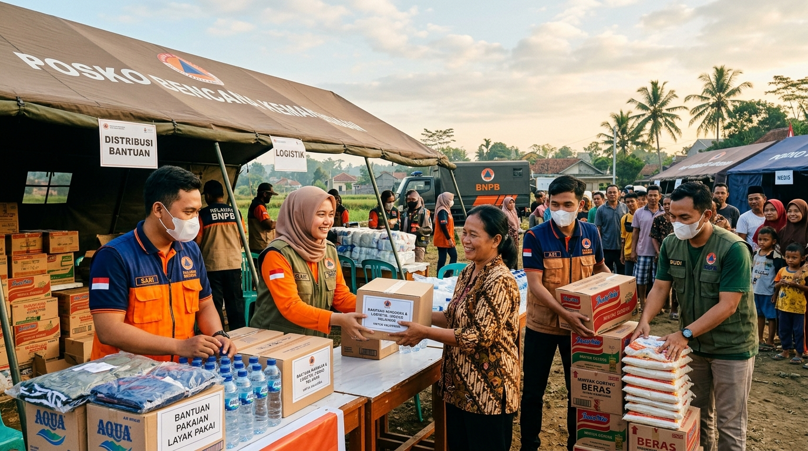

Distribusi BantuanUpdate Kondisi Posko Bencana
Proses verifikasi dan penerimaan barang donasi di lokasi posko berjalan dengan lancar. Tim relawan terus melakukan pemeriksaan fisik barang yang masuk dari para donatur.
Salurkan kebaikan Anda secara nyata. Kami memfasilitasi penerimaan dan distribusi bantuan logistik, pakaian layak pakai, serta obat-obatan untuk posko tanggap darurat dengan verifikasi transparan dan amanah.
Laporan langsung dari para relawan mengenai kondisi posko dan distribusi bantuan donasi di lapangan.

Distribusi BantuanProses verifikasi dan penerimaan barang donasi di lokasi posko berjalan dengan lancar. Tim relawan terus melakukan pemeriksaan fisik barang yang masuk dari para donatur.
Menghadapi cuaca ekstrem di lokasi pengungsian, dibutuhkan tambahan selimut tebal, popok bayi, dan paket makanan siap santap higienis.
Penyaluran obat-obatan darurat serta pemeriksaan kesehatan berkala bagi lansia dan anak-anak telah menjangkau lebih dari 450 keluarga penerima manfaat.
Ikuti langkah-langkah mudah berikut untuk menyalurkan barang donasi Anda:
Masuk ke akun Anda atau daftar jika belum memiliki akun untuk memantau status penyaluran bantuan.
Isi form pengajuan donasi dengan menyertakan detail barang dan kategori yang hendak disumbangkan.
Pilih posko tujuan terdekat atau posko dengan tingkat urgensi tertinggi sesuai lokasi Anda.
Tunggu verifikasi persetujuan dari admin lapangan demi memastikan kesesuaian kebutuhan posko.
Kirimkan barang ke posko setelah menerima notifikasi persetujuan resmi beserta kode bukti serah terima.
Kelola riwayat donasi dan dapatkan transparansi laporan secara berkala.
Lengkapi formulir di bawah ini dengan data yang valid agar relawan kami dapat memverifikasi barang bantuan Anda dengan cepat.